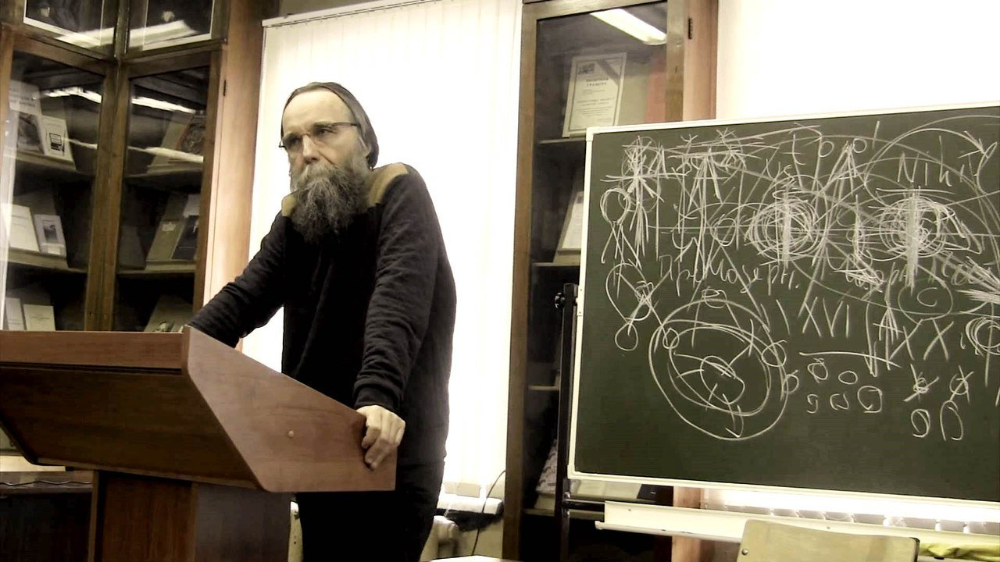
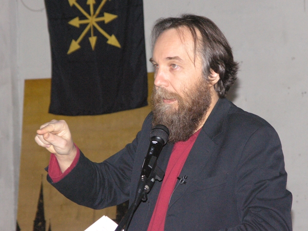

 
Одним из ярких представителей Постмодерна, глубже и трагичнее других проникшим в его сущность, был французский философ, социолог и эссеист Жан Бодрийяр (1929 — 2007). Бодрийяр в юности был близок к французским левым, марксистам и ситуационистам[1], но позднее критически отнесся к основным догмам классического марксизма, идеи которого он постарался поместить в более общий социологический контекст, используя для этого семиологию, структурализм, социологию (М. Мосса, Ж. Батайя, С. Кайуа и т.д.) и антропологию (К. Леви-Стросса). Так, он полагал, что исследуемый Марксом процесс обмена, на котором строится все функционирование капиталистической системы, интерпретируемый Марксом в дуальных категориях товар/деньги, надо понимать как частный случай обмена символами, и этот «символический обмен» предшествовал капитализму, существовал параллельно с ним (в период его индустриальной фазы) и особенно ярко проявляет свою сущность сегодня, когда капиталистическое общество вступило в новую эпоху. Эту эпоху и принято называть Постмодерном, хотя сам Бодрийяр, во многом повлиявший на основные теории и подходы постмодернистов, несколько дистанцировался от этого движения, полагая, что его идеи не подпадают под какую-либо одну школу или учение. Эти идеи Бодрийяр системно изложил в фундаментальной работе «Символический обмен и смерть»[2].
Бодрийяр в этой работе строит сводную топику марксизма и фрейдизма, отождествляя по своим функциям производство Маркса и бессознательное Фрейда, с одной стороны, и надстройку Маркса и порядок символических рядов объектов желания у Фрейда, с другой. Бодрийяр указывает, что во фрейдистской картине человека идет постоянная «работа сновидений», непрерывно порождающая фантазмы и желания, остающиеся в большинстве случаев под порогом сознания, но составляющие основу психической экономики индивидуума. Эту «работу сновидений» Бодрийяр отождествляет со сферой производства. Сновидения (грезы, желания, libido) становится в социологическом масштабе всего общества тем, что Маркс определяет как Труд.
Наложение двух топик — марксистской и фрейдистской — приводит Бодрийяра к следующему выводу: по мере развития капитализма значение надстройки по сравнению с базисом (то есть бессознательным) постоянно возрастает, что выражается в автоматизации производства и росте среднего класса. Строго параллельно происходит нормативизация ранее запретных и цензурируемых сюжетов, символов и практик, все активнее и плотнее включающихся в область культуры, и даже массовой культуры. Тем самым, базис становится все более зависимым от надстройки, и функцией пролетариата и всего трудового процесса отныне является не производство товаров, но тотальное (хотя и пассивное) соучастие в социализации масс, включении их в область надстройки. Отношения «надстройка/базис» и «сознание/бессознательное» переворачиваются через их осмотическое взаимопроникновение; классовый антагонизм через имманентизацию иерархии, превращающейся из вертикальной в «горизонтальную», становится взаимообратимым и двусмысленным. Так, «восстание масс» (подъем социального и политического значения производящего класса, о котором писал испанец Оргета-и-Гасет[3]) купируется «восстанием элит», которое американский социолог К. Лэш[4] описал как «вульгаризацию» правящего класса, все более по своей культуре, нравам и ценностям начинающего напоминать среднестатистического человека толпы. Это приводит, по Бодрийяру, к тому, что вместо прежней надстройки и базиса формируется сплошная, хотя и ассиметричная, содержащая противоречия внутри себя, но уже не в классовой, а в метаклассовой форме, гиперреальность.
Гиперреальность – важнейший концепт Ж. Бодрийяра, в котором он видит сущность новой эпохи, сменяющей собой Модерн. Гиперреализм отличен, по Бодрийяру, и от реализма и от сюрреализма. Он пишет:
Сюрреализм был все еще солидарен с реализмом, критикуя его и порывая с ним, но и дублируя его в сфере воображаемого. Гиперреальность представляет собой гораздо более высокую стадию, поскольку в ней стирается уже и само противоречие реального и воображаемого. Нереальность здесь — уже не нереальность сновидения или фантазма, чего-то до- или сверхреального; это нереальность галлюцинаторного самоподобия реальности. Чтобы выйти из кризиса репрезентации, нужно замкнуть реальность в чистом самоповторении.[5]
Надстройка в таких условиях больше вообще не отражает (даже искаженно, через идеологию, как в марксизме) базис, но просто игровым образом учреждает его (точнее, его симулякр). Так, современные средства массовой информации рассказывают не о событиях, а об их интерпретациях, подчас не просто скрывая под интерпретациями события, но и вообще не обращая на них внимания, то есть попросту придумывая их. Современная демократия, призванная функционально представлять кого-то, не представляет больше никого, и тем самым, имеет полную свободу представлять всех. Действительность товара исчезает за модной маркой, фирмой, лейблом, что приводит к производству и потреблению не вещей, но знаков (Бодрийяр называл это «семиургией» — производством знаков). Но знаки относятся к сфере бессознательных желаний: мы обращаем внимание преимущественно на те знаки, которые резонируют с теми символами, которые формируются или выбираются бессознательным. Так, экономика постепенно неразрывно сращивается с полем психоанализа, а сам обмен, на котором основано общество, становится обменом исключительно символами, как квантами желаний.
Символизм обмена, как показывает Мосс, доминировал и в архаических докапиталистических системах, где он выступал эксплицитно (что до сих пор можно увидеть в обмене как циркуляции магических сил, заложенных в объектах, например, в полинезийской цивилизации). В капитализме на место знака пришла вещь, конкретный товар в его материальной наглядности и функциональности. Но за товаром был скрыт все тот же сакральный знак, символ, освобожденный от логики священного баланса (необходимости уничтожения «проклятой части», что подробно описано у Ж. Батайя) и поэтому подвергшийся ассиметричному накоплению. Постепенно вещь, с которой оперировал ранний капитализм, вырвавшийся из-под запрета на ссудный капитал и подчинения третьего сословия аристократии и клиру, снова стала обнаруживать свою природу знака, но уже как нечто, добавляемое к вещи, а не предшествующее ей, как в архаическом обмене, где вещь мыслилась как выражение магической силы «хау», предваряющей её[6]. Это пост-вещную функцию Бодрийяр называет термином «симулякр», ставшим благодаря его трудам важнейшим постмодернистским концептом, используемым даже в бытовой лексике. Чтобы лучше понять мысль Бодрийяра, можно предложить следующую таблицу:
| Премодерн (архаика) | Модерн | Постмодерн |
| хау (магическая сила вещи, сакральная вещь) | реальная вещь | симулякр |
| сакральный обмен, уничтожение «проклятой части» | капиталистический обмен (товар-деньги-товар) накопление «проклятой части» | символический обмен порядок симулякров обмен знак/знак гиперреальность всеобщее потребление «проклятой части» в культуре массовой галлюцинации |
Бодрийяр выделяет три порядка симулякров на протяжении ограниченного отрезка европейской истории – от эпохи Возрождения (пред-капитализм) через собственно индустриальный капитализм вплоть до настоящего периода, пост-индустриального капитализма. Он описывает все три этапа таким образом:
· Подделка составляет господствующий тип «классической» эпохи, от Возрождения до промышленной революции;
· Производство составляет господствующий тип промышленной эпохи;
· Симуляция составляет господствующий тип нынешней фазы, регулируемой кодом.[7]
В такой версии симулякр появляется, по Бодрийяру, не после конца Модерна, но на его заре, и в первичной форме выступает в виде жилета, типичного изобретении буржуа, стремящегося походить на аристократа, но не имеющего достаточно средств для того, чтобы сшить всю поддевку целиком из дорогого материала – откуда и грубая ткань на задней стороне жилета. Предкапитализм уже нес в себе зародыш симуляции, так как был эпохой подделок (в том числе и театра, представляющего собой апофеоз поддельной жизни), и поэтому первую фазу Бодрийяр называет «первым порядкам симулякров».
«Второй порядок симулякров» соответствует промышленному капитализму, где симуляционная матрица скрыта под личиной концепта «реального» производства.
«Третий порядок симулякров» наступает в эпоху 60-х годов ХХ века и становится собственно Постмодерном. В этот период концепт «реальности» уступает место концепту «гиперреальности», все ценностные системы прошлого (как Премодерна, так и Модерна – Бог, человек, сакральное, автор, прогресс и т.д.) рушатся, и на их место вступают тоталитарные поля фантазмов, в которых свобода воображения становится основой репрессивности, превращая желание в нечто обязательное и воплощенное в массовой доминантной культуре. Бодрийяр так описывает сущность гиперреализма:
Само определение реальности гласит: это то, что можно эквивалентно воспроизвести. Такое определение возникло одновременно с наукой, постулирующей, что любой процесс можно точно воспроизвести в заданных условиях, и с промышленной рациональностью, постулирующей универсальную систему эквивалентностей (классическая репрезентация — это не эквивалентность, а транскрипция, интерпретация, комментарий). В итоге этого воспроизводительного процесса оказывается, что реальность — не просто то, что можно воспроизвести, а то, что всегда уже воспроизведено. Гиперреальность.
(…) гиперреализм есть высшая форма искусства и реальности в силу обмена, происходящего между ними на уровне симулякра, — обмена привилегиями и предрассудками, на которых зиждется каждое из них. Гиперреальность лишь постольку оставляет позади репрезентацию (…), поскольку она всецело заключается в симуляции. Коловращение репрезентации приобретает в ней безумную скорость, но это имплозивное безумие, которое вовсе не эксцентрично, а склоняется к центру, к самоповторению и самоотражению. Это аналогично эффекту десантирования от собственного сновидения, когда мы говорим себе, что видим сон, но это всего лишь игра цензурирования и продления сна; так и гиперреализм является составной частью кодированной реальности, которую он продлевает и в которой ничего не меняет.
На самом деле гиперреализм следует толковать в противоположном смысле: сегодня сама реальность гиперреалистична. Уже и секрет сюрреализма состоял в том, что наибанальнейшая реальность может стать сверхреальной, но только в особые, привилегированные моменты, еще связанные с художеством и с воображаемым. Сегодня же вся бытовая, политическая, социальная, историческая, экономическая и т.п. реальность изначально включает в себя симулятивный аспект гиперреализма: мы повсюду уже живем в «эстетической» галлюцинации реальности. Старый лозунг «Реальность превосходит вымысел», соответствовавший еще сюрреалистической стадии эстетизации жизни, ныне сам превзойден: нет больше вымысла, с которым могла бы сравняться жизнь, хотя бы даже побеждая его, — вся реальность сделалась игрой в реальность: радикальное разочарование, кибернетическая стадия cool сменяет фантазматическую стадию hot.[8]
Симулякр и гиперреальность, по Бодрийяру, есть подделка. Но не по отношению к реальности, поскольку сама реальность, в конце концов, это не что иное как буржуазный концепт. Освобожденная от эйдетической нагрузки вещь становится ничто и обнаруживает себя как смерть. В сакральном обществе это прекрасно осознавалось, поэтому смерть наделялась позитивной онтологией, институционализировалась, помещалась в центре социального внимания – через обряды, ритуалы, мифы, религиозные институты и т.д. Реальность и была первым симулякром сакральности, поскольку подвергала смерть негации, наделяя ее всецело негативной онтологией. Вещь, лишенная своего «хау», есть, на самом деле, чистое хау – как смертоносная сторона сакральности. Сущность вещи, лишенной сложной дифференцированной интеграции в онтологию священного, есть смерть. Смерть и реальность – одно и то же. Это ясно видно в системе Лакана, где порядок реального описывается как синтез смерти и желания, Эроса и Танатоса, объединенных в единую и нераздельную инстанцию. Не в силах принять нигилизм вещи и призванный репрезентировать вещность денег как еще более нигилистическую инстанцию, чем вещь, а точнее, материальную (смертельную) сущность вещи, капитал (капитализм) придал самому себе «серьезный», «деловой» характер, превратив фантазм накопительства в глобальную, тоталитарно захватывающую все человечество институцию. Тем самым, он пытался скрыть подделку Возрождения, которая, в свою очередь, была симулякром именно в силу десакрализации предмета. Симулякр – это заболевший символ, вступивший в противоречие с самим собой и открывающий свою смертоносную природу. По Батайю, это объясняется забвением о необходимости уничтожить «проклятую часть». Как только это происходит, накопление излишков есть накоплении количества смерти и ничто, которые превращают вещи в свои онтологические противоположности, а мир, наполненный бытийным содержанием — в мир, лишенный его. Но обнаруживается это только в третьем порядке симулякров, то есть в гиперреальности, когда наступает диктатура кода, воплощенная в моде, общественном мнении, чистых финансах (оторванных от производственной базы реального сектора экономики). Это и есть, по Бодрийяру, Постмодерн: закономерный результат движения европейской культуры в сторону своего заката, который свершается в настоящее время. Но вместо того, чтобы исчезнуть, западная цивилизация, напротив, пухнет, раздувается от постоянно нарастающего в ней объема смерти, в бегстве от которой создаются все новые и новые этажи, процедуры и увеселительные практики гиперреальности.
Отношение самого Бодрийяра к Постмодерну нейтрально и пессимистично в силу его общей оценки Модерна. Его антикапитализм и частичный марксизм полностью свободны от энтузиазма прогресса и веры в успехи социальных преобразований в будущем. Он солидарен с критикой капитализма, и особенно с разоблачением присущих ему идеологических стратегий по сокрытию истины о своей природе. Но вместе с тем, Бодрийяр явно не разделяет надежд левых на революцию и создание более совершенной и справедливой социальной системы. Капитализм есть зло и ложь, и единственная траектория его развития состоит в том, чтобы зло и эта ложь становились все более и более масштабными и глобальными, кульминацией чего и является Постмодерн, гиперреализм, третий порядок симулякров и сопутствующая ему американоцентричная глобализация. Америку Бодрийяр считает обществом пост-истории, где все ориентиры, которые Европа ставит перед собой как цели в будущем, уже заведомо достигнуты с момента основания этого парадоксального общества. В США, по Бодрийяру, гиперреализм победил изначально[9]. Поэтому будущее, по Бодрийяру, уже наступило, и оно ужасно – каким, впрочем, и должно было бы логически стать, поскольку никаким иным оно быть и не могло.
Это критическое отношение к Западу, Модерну и современной Европе сделало Бодрийяра одной из авторитетных фигур для французских «Новых Правых», которые восприняли его гипер-критику Запада и имплицитную апологию сакрального и архаического как своеобразную (хотя и атипичную) версию традиционализма и радикального консерватизма. Сам же он старался избегать любой квалификации своих взглядов, подчеркивая, что его целью было сделать мир своим философским творчеством не проще того, каким он его нашел в начале своего пути, но несколько сложнее. При этом основной вопрос философии, в отличие от Лейбница, спросившего: «почему существует нечто, а не ничто?», Бодрийяр переформулировал так: «Почему ничего нет, вместо того, что бы хоть что-то было?»[10]
[1] Ситуационизм – крайне левое течение во Франции 60-х-70-х годов, основанное французским социологом и философом Ги Дебором (1931 — 1994).
[2] Бодрийяр Ж. Символический обмен и смерть. М.: Добросвет, 2000.
[3] Оргтега-и-Гассет X. Восстание масс. М.: Весь мир,2001.
[4] Лэш К. Восстание элит и предательство демократии. М.: Логос; Прогресс, 2002.
[5] Бодрийяр Ж. Символический обмен и смерть. Указ. соч .С. 149.
[6] Мосс М. Очерк о даре /Мосс М. Общества. Обмен. Личность: Труды по социальной антропологии М.: Восточная литература, РАН, 1996.
[7] Бодрийяр Ж. Символический обмен и смерть. Указ. соч. С.113.
[8] Бодрийяр Ж. Символический обмен и смерть. Указ. соч. С.151-152.
[9] Бодрийяр Ж. Америка: СПб.: Владимир Даль, 2000.
[10] Baudrillard J. Le crime parfait. P.: Galilée, 1995.